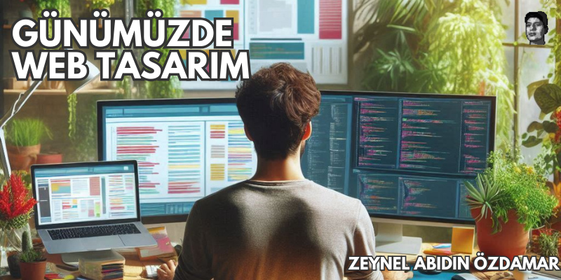

YAYINLARIM
Yazılım ve teknoloji dünyası hakkında yazdığım yazılar ve içerikler.
#2 Günümüzde Web Tasarım
Web tasarımı, dijital dünyada hepimizin her gün karşılaştığı, ama çoğu zaman farkında bile olmadığımız...
Devamını Oku...#1 Mobil Uygulamaların Kısa Tarihi

Günümüzde hayatımızı kolaylaştırma görevinin bir parçası olan mobil uygulamaların tarihine gelin beraber bi’ göz atalım.
Devamını Oku...